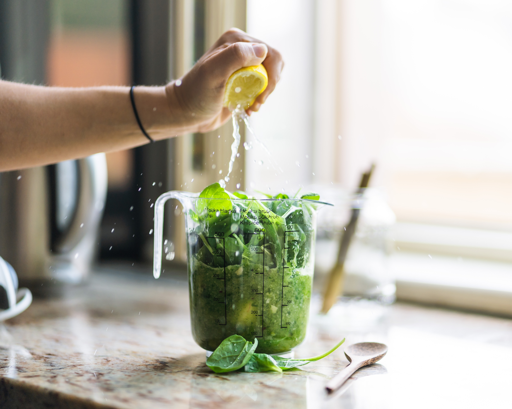

나는 간헐적 단식을 16:8 시간으로 할 것이다. 간헐적 단식에는 12:12 도 좋지만 더 날씬해지려면 16:8 이 좋다. 7일에 2번 다식하는 것두 있는데 나는 그것 하고 싶지 않다.
가장 보편적인 방법에는 4가지 정도가 추천된다.
1) 16/8 금식법 : 하루 중 16시간 금식하고 나머지 8시간 중 저칼로리 식사를 하는 방법[3]
2) 5/2 금식법 : 24시간 동안 금식하고 이후 식사하거나 월-수-금-일요일에는 저칼로리 식사를 하고, 혹은 화-목-토요일에는 금식하는 방법
3) 물 금식법(Water Fasting) : 물만으로 수일간 금식하는 방법. 가장 어려운 방법이며 전문가의 도움이 필요할 수도 있다.
4) 주스나 육수 금식법(Juice and Broth Fasting) : 비타민, 미네랄과 지방이 포함된 사골국물을 이용하는 방법